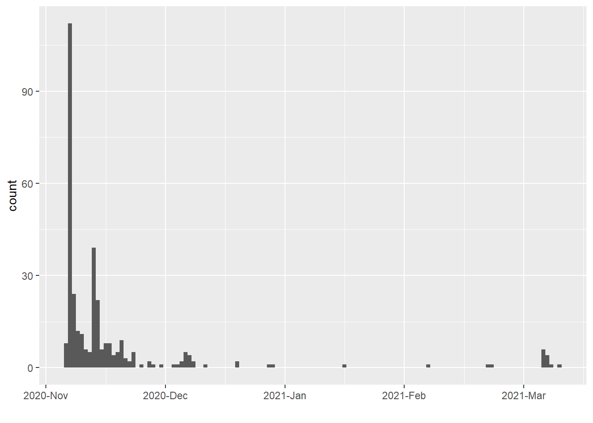

C Pilot demographics
C.1 Response date
As reported by Qualtrics’ Recorded Date estimates:

Figure C.1: Qualtrics recorded date of pilot survey response
As reported by Qualtrics’ Recorded Date estimates:
Figure C.1: Qualtrics recorded date of pilot survey response